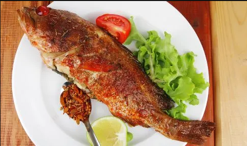

Fish Fry

Description:
A fish fry is a delectable dish featuring fresh fish fillets coated in seasoned batter, fried to a golden crisp. Served with fries or a light salad, it's a universally loved culinary treat, boasting a perfect balance of crispy exteriors and tender, flaky fish inside.
Ingredients
- Small fish
- Corn flour
- Egg
- Salt
- Cumin powder
- Red chilli powder
- Soya sauce
- Meat masala
- Lemon
- Garlic, ginger (paste)
- Oil
Cooking Method
- First, clean the fish with water.
- Make mixture by adding corn flour, egg, salt, cumin powder, red chilli powder, soya sauce, meat masala, lemon juice, ginger and garlic paste, and 30 ml water in a clean dry bowl.
- Marinate the fish with above mixture and leave it for 30 minutes to infuse the flavors.
- Heat the pan by pouring oil.
- Put the marinated fish one by one in the pan and deep fry until it turns into golden brown colour.
- Now fired fish is ready to be served.